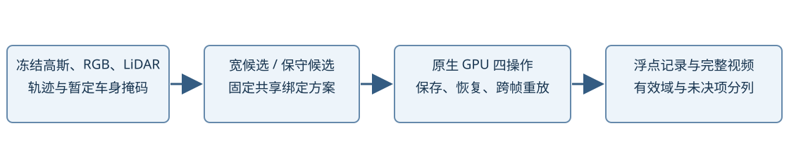
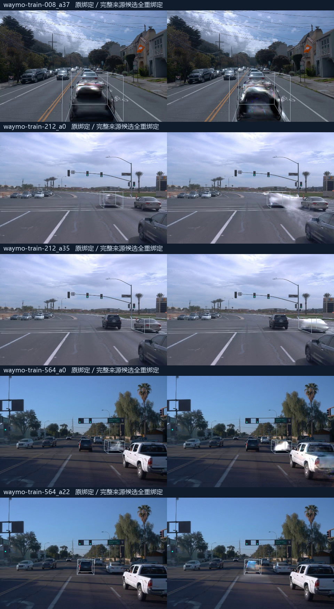

2026-11-01 保留范围更新：用户已停止本轮实验方向。报告、视频、图片、指标、代码及原始 30K 权重保留；大体积逐帧浮点中间输出和临时恢复副本已清理。此前保存／恢复收据记录的是清理前状态，不能据此认为完整中间数组仍在。后续不得从旧控制器自动续跑。
2026-11-01 · 5辆开发车辆，3个场景祖先。主任务为E0恢复及E2共享绑定小域对照；新增模型训练更新为0。打开编辑对照

恢复原始静态、动态、环境与运行状态。对每例完整49帧计算原始none与车身/外域伴随贡献；分别冻结宽候选、原位可见保守候选，以及原位或剥离后显露候选，每个候选域枚举最多8份共享绑定，覆盖none/delete/shift/rotate三个锚点。同一方案跨操作复用。另对保守域的“原绑定”和“全部重绑定”两个固定端点渲染完整49帧，端点并非事后挑选的最优方案。
| 车辆 | 宽候选行 | 保守候选行 | 锚点输出 | 整段输出 | 原生none最大差 |
|---|---|---|---|---|---|
| scene-008 / a37 | 70497 | 12572 | 288 | 1568 | 0 |
| scene-212 / a0 | 2966 | 0 | 216 | 1176 | 0 |
| scene-212 / a35 | 1358 | 43 | 288 | 1568 | 0 |
| scene-564 / a0 | 13229 | 0 | 216 | 1176 | 0 |
| scene-564 / a22 | 1386 | 71 | 384 | 1568 | 0 |
宽候选为三个固定锚点的实测邻域（0.25米）首次命中分组。保守候选额外要求原始49帧伴随贡献中车身比例≥0.95、总量>1e-4；这是沿用的开发候选域，不是校准后的资格或身份概率。各候选域结果分开比较，不能混合成一项最优结果。
原位贡献筛选使212/a0与564/a0的静态候选为空。保留这一负结果后，按R4已有的显露来源设计补齐控制：仅剥离预先冻结的目标动态子集，计算原始49帧同一车身掩码上的来源贡献。在同一个原始U和相同三锚分组内，用原位或显露条件的贡献比例≥0.95、总量>1e-4取并集；没有使用编辑评分、学生输出或独立编辑参考选择行。新特征规则在该控制计算前保存，未倒写为首轮预注册。
显露来源域的两条固定端点方案仍保留远端；原位保守域的完整FP32及两域三锚结果仍保留。剥离所得颜色不等于正确隐藏背景，更多显露来源也不等于更准确归属。
进一步核查表明，固定0.25米实测邻域只覆盖三个锚点中约3%–14%的高车身贡献显露来源质量。此分母仅是本次候选贡献池，不是真实车辆归属或全局召回GT。因此，不能用邻域小域的负结果否定R4决策空间。新增的最后一项来源控制直接读取全场景原始静态行在三个锚点的原位或剥离后贡献，以相同0.95比例和1e-4总量建立候选，再按首个支持锚点分为最多三组。规则在新候选生成及新域渲染前保存，没有用编辑评分或独立GT选行。
| 车辆 | 完整来源候选行 |
|---|---|
| waymo-train-008_a37 | 229313 |
| waymo-train-212_a0 | 13865 |
| waymo-train-212_a35 | 7587 |
| waymo-train-564_a0 | 47083 |
| waymo-train-564_a22 | 14946 |
默认视频现在展示完整来源域的两个固定端点。该域可能包含道路、阴影、背景或大足迹高斯；纳入候选不等于属于车辆。四个候选域分开记账，不跨域拼接“最佳方案”，三个粗分组也不代表完整逐行搜索。
四个域均实际保存完整推理状态及冻结原始bundle引用，在新进程恢复相机、运动、环境、路由和RNG，重放两份端点方案、全部四操作，再进入枚举或整段入口。原始检查点没有更新；没有创建模型优化器。原生前向与保存恢复重放的误差见逐例摘要。工程重放与正常输出分列在执行账。
原生前向的通过不能替代伴随贡献数值检查。FP32光栅及原子伴随的全图质量总和，在部分564帧仍未通过0.05绝对/2ppm相对的严格门禁；原始FAIL保留，没有放宽该门禁冒称通过。后续继续的是独立的原生前向/恢复实验；伴随数据和保守候选均保持诊断身份，不能作为精确归属、完整表面或正式P资格证书。
以下是事先固定的中锚点删除对照：左为原绑定，右为完整来源候选全部重绑定。五例没有呈现一致的残留清除；部分右侧显露亮色残留，并改变其他区域。这些是范围与来源控制，不能直接命名为好答案，也不能从一个端点失败推断全部逐点绑定都不可行。

现已得到相同冻结表示内、不同共享绑定导致的真实原生结果与保持域变化，可直接查看目标、旧位置和背景的取舍。全部锚点指标保留每个方案，不自动按单项残影指标挑赢家。outside_source_body_RGB_change仅表示原始车身掩码外的图像变化；平移/旋转本来就可能改变该区域，因此它不是自动的误编辑率。
212/a35与564/a22没有原动态目标资产，仅允许重绑定的静态候选参与目标操作，其他动态车辆固定。008/a37来自五车动态层，逐行原始身份未记录；本轮根据完整49帧合法贡献冻结目标动态子集，属于暂定关联控制，未将整层五车移动或删除，也不称原生真实owner。
本轮又实际补充了原始深度/RGB、稀疏历史地面射线、点与环境分量，以及样本行的跨时跨操作变换核对。5例×8类40项记录逐条注明已执行、部分检查或尚未因果验证；没有把unknown当完成。独立E1新增28份原生单因素控制和9项不变性核验，但多表面、阴影反射与完整未知背景等验证仍缺。所有归属训练标签区域保持禁用，未生成好坏答案。
20项逐操作正式资格继续unknown：尚缺独立校准的深度/表面、操作视向、历史背景显露和安全阈值。真实街景没有独立完整编辑GT，本轮不能报告精确有限域regret、完整删除/旋转成功率或跨场景学习收益。已有观测像素只用于原场景与局部诊断，未假造未知路面监督。
本轮完成五例GPU对照；尚未进入L0训练。下一步应先从这些固定方案中核实可辨识的配对收益与合法有效域，再建立学习所需的训练/校准/测试角色。不能用事后编辑效果回改事前资格，也不能为了启动训练而把未知项默认为通过。
CPU准备首次遇到旧Torch环境不接受Path类型mmap参数，已在兼容CPU环境重放。早期多个控制器重叠，实际并发超过两任务，导致212/a35一次OOM；该阶段从保存状态在新目录完整重放，后续控制器串接、全局最多两GPU任务。冗余564/a22审计在既有冻结目录处停止，未覆盖有效输出。部分早期stdout采用同名日志而被后续尝试替换；事件、部分浮点输出、原脚本及已取回的OOM日志仍保留，不能声称所有stdout均完整。详见工程记录。
输入与动作合同 · GPU入口 · 观测与候选准备 · 只读结果汇总
大体积FP32中间输出与恢复工作副本已按用户要求清理，报告、视频、指标、日志和原始30K权重保留；本地交付视频、逐方案锚点图、指标及恢复收据。人工verdict未代填。报告不加入共享可视化平台。